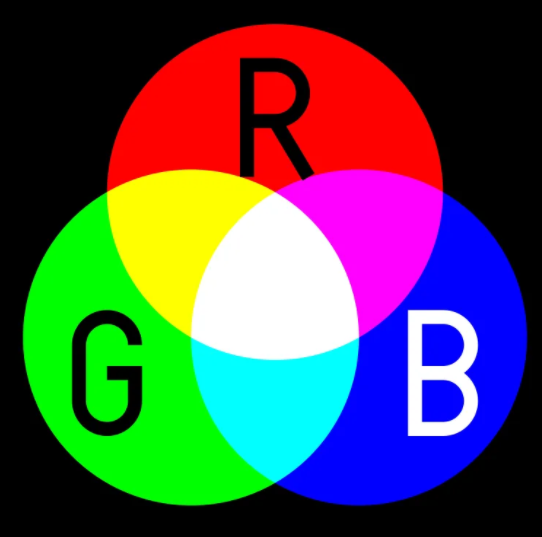
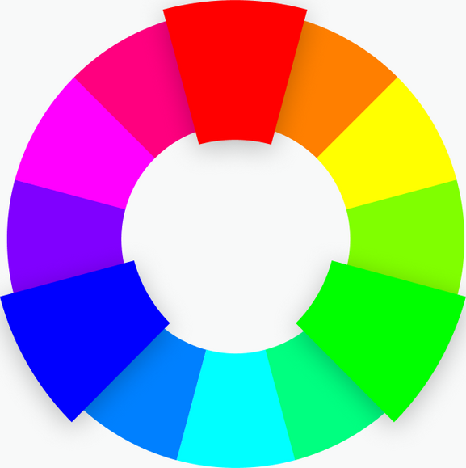
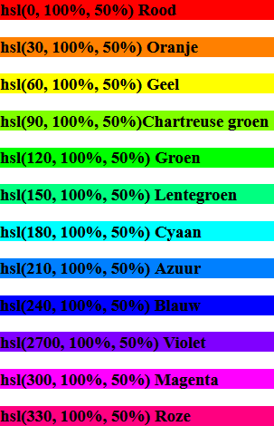

CSS en SCSS
Gebruik van CSS en SCSS
CSS
CSS wijzigt de stijl van HTML-tags door specifieke classes of id’s te gebruiken.
CSS selectors definiëren op welke elementen CSS regels moeten worden toegepast.
selector {
property: value;
property: value;
}De declaratie bestaat uit één of meerdere paren van een property en een waarde. Tussen property en een waarde staat een dubbele punt. De paren worden van elkaar gescheiden door een puntkomma. De laatste puntkomma is optioneel.
Voorbeeld
h1 {
font-family: arial, "times new roman", helvetica;
color: blue;
text-align: center;
}Een waarde voor de propert font-family kan uit meerdere delen bestaan, van elkaar gescheiden door een komma. De browser probeert hieruit een beschikbaar font te kiezen, van links naar rechts. Komen er spaties in de fontnaam voor, dan moet de fontnaam door rechte quotes omgeven worden.
Selectors
Universele selector
* {
color: red;
}Dit is een stijl voor alle elementen. Niet erg zinvol.
HTML selector
Selectors voor individuele elementen
Wanneer je een eigenschap op meerdere elementen toe wilt passen scheid je de tekst door komma’s. Dit is dan een groep selector.
h1, h2, h3 {
font-family: arial;
color: blue;
text-align: center;
}
body {
font-size: 11px
}Selectors in context
p b {
colr: red
}Deze regel wordt toegepast op alle <b> tags binnen een p tag, b is een child van p.
Paren-Child selector
Een parent-child relatie wordt weergegeven met het symbool >
body > p {
font-weight: bold;
}Deze stijl wordt alleen aan paragrafen toegekend die directe children zijn van het body element.
Adjacent selector
Kan gebruikt worden voor direct aangrenzende elementen
h1 + h2 {
margin-top: 11px;
}Toegepast op
<h1>Titel</h1>
<h2>Eerste onderdeel</h2>
<h2>Tweede onderdeel</h2>Alleen het eerste h2 element is aangrenzend aan het h1 element en krijgt de opmaak.
Class selector
Een class selector begint met een punt.
.speciaal {
color: green;
}Je kan deze class op elk element toepassen:
<p class=”speciaal”>Zomaar een paragraaf.</p>Wanneer je alleen bepaalde elementen met deze class wilt identificeren, dan kan de selector specifieker gemaakt worden, zoals in
p.speciaal {
color: black;
}Aan een HTML kunnen meerdere classes worden toegekend die dan door een spatie gescheiden moeten worden.
<p class=”speciaal attentie”>Een kadootje</p>ID selector
Met een ID selector kunnen unieke onderdelen worden geselecteerd. Deze selector begint met een #. In een pagina moet het id uniek zijn.
#opvallend {
color: red;
}Toegepast:
<p id=”opvallend”> … </p>Pseudo-class
Een pseudo-class start met het : symbool. Bijvoorbeeld met a:active wordt de stijl alleen toegepast op actieve links.
a:link {
color: blue;
}
a:visited {
color: black;
}
a:active {
color: green;
}
a:hover {
color: red;
}Er bestaan veel pseudo-classes, vooral de structurele. Deze zijn handig om specifieke childs te selecteren, zoals element:first-child.
In het volgende voorbeeld wordt de stijl alleen toegepast op het eerste item van een li element.
li:first-child {
font-size: 16px;
font-weight: bold;
}Pseudo-elementen
In CSS3 worden pseudo elementen worden voorafgegaan door :: (twee dubbele punten). De meest bekende zijn ::before en ::after, die respectievelijk van toepassing zijn voor en na het geselecteerde element.
In CSS2 is dit :, een enkele dubbele punt.
::beforevoegt inhoud toe vóór de inhoud van het opgegeven element. De inhoud zelf kun je specificeren met decontentproperty.::afteranaloog, maar dan na de inhoud van het opgegeven element.
Zo kun je een tekst voor de inhoud van elk <p> toevoegen met
p::before {
content: "Lees dit: ";
}En toegepast
<p>Start eerst Excel op.</p>Dit levert de volgende uitvoer op
Lees dit: Start eerst Excel op.
Attribuut selectors
Een attribuut selector definieert een regel welke toegepast wordt op elementen met dat specifieke attribuut.
Bekijk de volgende HTML code:
<a target="_blank">Website</a>
<a target="_parent">Website</a>
<a target="_self">Website</a>Wanneer je CSS code op alle a tags met een target attribuut wilt toepassen kan dat met
a[target] {
color: red;
}Wanneer je de CSS code alleen wilt toepassen bij een bepaalde waarde voor target dan kan dat met
a[target="_blank"] {
color: red;
}Tips
Herhaalde code
Een goed gebruik is om geen code te herhalen. Hieronder staat een voorbeel van een slecht gebruik van CSS code. Zowel .opmaak-1 en .opmaak-2 hebben dezelfde color en border-radius. Alleen padding en font-size zijn verschillend.
.opmaak-1{
color: #33BEFF;
padding: 10px 16px;
font-size: 12px;
border-radius: 3px;
}
.opmaak-2{
color: #33BEFF;
padding: 5px 10px;
font-size: 12px;
border-radius: 3px;
}Een oplossing voor de herhaalde code is om de gemeenschappelijke eigenschappen te verzamelen in één generieke class:
.algemeen {
color: #33BEFF;
border-radius: 3px;
}
.opmaak-1 {
padding: 10px 16px;
font-size: 18px;
}
.opmaak-2 {
padding: 5px 10px;
font-size: 12px;
}Aan de HTML-kant voeg je de classes toe van de meest algemene tot de meest specifieke, zoals:
<div class="algemeen opmaak-1">Mijn element</div>
<div class="algemeen opmaak-2">Mijn element</div>Selector voorrang
Wat gebeurt er als meerdere verschillende selectors op hetzelfde element zijn gericht? Welke stijl wordt echt toegepast? Bekijk het volgende voorbeeld:
<div id="myelement" class="myclass">Zomaar wat tekst.</div>met de volgende CSS code:
#myelement {
color: red;
}
.myclass {
color: blue;
}
div {
color: green;
}Wat zal de tekstkleur van het element zijn? Nou, dit is niet voor de hand liggend. Je moet weten dat webbrowsers regels toepassen om de meer specifieke regels te selecteren:
Inline stijl is het meest specifiek. Dit is een stijl die rechtstreeks aan de HTML-tag is gekoppeld.
idis van toepassing op unieke objecten.class,pseudoclasses,attributes.elementen en pseudo-elementen.
In het voorbeeld is #myelement de meest specifieke selector, daarom zal de tekstkleur rood zijn.
Bij gelijkheid wordt de laatst geschreven selector toegepast:
<div class="class1 class2">Zomaar wat tekst.</div>.class1 {
color: blue;
}
.class2 {
color: red;
}Alleen de tweede selector wordt toegepast, de tekstkleur zal rood zijn. Om class1 toe te passen, moet je deze verplaatsen na de class2 stijldefinitie.
Eenheden voor afmetingen
| in | inch | |
| cm | centimeter | |
| mm | millimeter | |
| pt | point | 1 pt is gelijk aan 1/72 inch |
| pc | pica | 1 pc is gelijk aan 12 points (1/6 inch) |
| px | pixel | 1 pixel is een punt op een computer scherm (monitor). Is erg nuttig bij afmetingen en absolute positionering van objecten. Voor teksten wordt meer de em gebruikt. |
| em | em-height | 1em is gelijk aan de hoogte van de hoofdletter M in de huidige font, maar is in de praktijk gelijk aan de font-size. 2em betekent 2 keer de grootte van hethuidige font. Bijvoorbeeld indien een element wordt afgebeeld met een font van12 pt, dan is ‘2em’ gelijk aan 24 pt. De ‘em’ is een erg nuttige eenheid in CSS, omdat deze zich automatisch aanpast aan het gebruikte font. |
| % | percentage | 100 % is gelijk aan 1 em. |
| ex | x-height | 1 ex is de hoogte van de kleine letter x in het font. In de praktijk gewoonlijk ongeveer de helft van de font-size. |
Kleuren
De drie meest gebruikte css systemen voor kleurcodes zijn Hexcodes, RGBA en HSLA.
RGBA
RGB staat voor Rood, Groen en Blauw, de drie kleuren die schermen kunnen gebruiken om vrijwel elke andere kleur te produceren. Dit gebeurt met behulp van “additieve kleurmenging”.
RGB(255, 0, 0) is rood omdat de R maximaal is. Als u de G of de B instelt op 255, krijgt u volledig groen of volledig blauw. Zet ze allemaal tegelijk op 255 en je krijgt wit (de som van alle kleuren), terwijl het op nul zetten zwart wordt. Als je een vierde waarde toevoegt (het alfakanaal, tussen 0 en 1), kun je ook transparantie krijgen: RGBA (0, 0, 0, .5) vertaalt zich naar een halftransparant zwart.

Het is eenvoudig, maar niet zo intuïtief. De RGB-balans kan behoorlijk veranderen, zelfs als je alleen de tint van een kleur verandert, waardoor het voor mensen erg moeilijk is om handmatige aanpassingen te maken zonder een soort RGB-generator.
Hexcode
Hexcodes zijn gewoon een andere manier om RGB-waarden te schrijven. Iets als #6A79F7 (korenbloemblauw) verwijst rechtstreeks naar RGB (106, 121, 247). Met R=6A , G=79 B=F7.
Hexadecimale codes zijn nog lastiger voor mensen dan RGB, hoewel ze gemakkelijk te kopiëren en plakken zijn en gedenkwaardige letter-/cijfercombinaties kunnen hebben.
Je kunt ook transparantie aan hexadecimale codes toevoegen door aan het begin een waarde te plaatsen dat de hexadecimale waarde is van een percentage van 255 te plaatsen. Wil je een transparantie van 0.5, dan moet je 50% nemen van 255 wat afgerond 126 is. En 126 omzetten in hexadecimaal wordt 80. De hexcode wordt dan #806A79F7.
hsla()
De hsla() functie definieert kleuren via het Hue-saturation-lightness-alpha (HSLA) model.
Syntax: hsla(hue, saturation, lightness, alpha)
- hue
-
Definieert de kleur. De waarde hiervoor geeft het aantal graden op het kleurenwiel weer. Rood is 0 (of 360) graden, Groen is 120 graden en Blauw is 240 graden.
- saturation
-
Definieert de verzadiging en is in wezen hoe kleurrijk de kleur is. 0% is een grijstint en 100% is de volledige kleur (volledige verzadiging). Als je je kleur wilt dempen of iets meer wilt laten opvallen, kun je deze waarde gewoon wijzigen.
- lightness
-
Definieert de lichtheid en geeft aan hoe donker of helder de kleur is. 0% lichtheid betekent dat de kleur zwart is, ongeacht de instellingen voor tint of verzadiging, en 100% lichtheid zorgt voor wit. En 50% geeft de normale kleur.
- alpha
-
Definieert de dekking als een getal tussen 0.0 (volledig transparant) en 1.0 (volledig ondoorzichtig)
Voorbeelden:
- hsla(120, 100%, 50%, 0.3) - groen
- hsla(120, 100%, 75%, 0.3) - lichtgroen
- hsla(120, 100%, 25%, 0.3) - donkergroen
Kleurenwiel

Er zijn 12 hoofdkleuren op het kleurenwiel. In het RGB-kleurenwiel zijn deze tinten

Het kleurenwiel kan worden onderverdeeld in primaire, secundaire en tertiaire kleuren.
- Primaire kleuren
-
In het RGB-kleurenwiel zijn dit de kleuren die, bij elkaar opgeteld, puur wit licht creëren. Deze kleuren zijn rood, groen en blauw.
- Secundaire kleuren
-
Dit zijn kleuren die ontstaan door het mengen van twee primaire kleuren. Er zijn drie secundaire kleuren. In het RGB-kleurenwiel zijn dit cyaan (groen + blauw), magenta (blauw + rood) en geel (rood + groen).
- Tertiaire kleuren
-
Dit zijn kleuren die gemaakt worden door een secundaire kleur te combineren met een primaire kleur. Er zijn zes tertiaire kleuren. In het RGB-kleurenwiel zijn dit oranje, chartreusegroen, lentegroen, azuurblauw, violet en roze.
Kleurcombinaties
- Complementair
-
Twee kleuren die zich in het kleurenwiel tegenover elkaar bevinden. Deze combinatie zorgt voor een hoog contrast en een krachtige kleurencombinatie - samen zullen deze kleuren helderder en prominenter lijken.
Bijvoorbeeld 0 (Rood) en 180 (Cyaan)
- Monochromatisch
-
Verschillende tonen en tinten van één basiskleur bieden een subtiele en conservatieve kleurencombinatie. Dit is een veelzijdige kleurencombinatie welke zorgt voor een harmonieuze uitstraling.
Bijvoorbeeld hsl(30, 100%, 50%) en hsl(30, 50%, 50%)
- Analoog
-
Verschillende kleuren die naast elkaar op het kleurenwiel staan. Deze kleurencombinatie is veelzijdig, maar kan overweldigend zijn. Om een analoog kleurenschema in evenwicht te brengen, kies je één dominante kleur en gebruik je de andere als accenten.
Bijvoorbeeld hsl(180, 100%, 50%), hsl(210, 100%, 50%) en hsl(240, 100%, 50%)
- Triadic
-
Drie kleuren met gelijke onderlinge afstanden op het kleurenwiel. Dit biedt een kleurenschema met hoog contrast, maar minder dan de complementaire kleurencombinatie - waardoor het veelzijdiger is. Deze combinatie zorgt voor gedurfde, levendige kleurenpaletten.Bijvoorbeeld hsl(0, 100%, 50%), hsl(120, 100%, 50%) en hsl(240, 100%, 50%)
- Tetradic
-
Vier kleuren met gelijke onderlinge afstanden op het kleurenwiel. Deze kleurenschema’s zijn gedurfd en werken het beste als je één kleur dominant laat zijn en de andere als accenten gebruikt. Hoe meer kleuren je in je palet hebt, hoe moeilijker het is om te balanceren.
Lees verder:
CSS in actie
We bespreken de meest gebruikte CSS-eigenschappen zoals tekstopmaak, schaduwen, kleur en achtergrondkleur, …
Tekstopmaak
Lettertypes bepalen het uiterlijk van de tekst en kunnen als volgt worden gewijzigd:
tag {
font-family: Arial, "Source Sans Pro", ..., serif;
}In de praktijk voer je meerdere lettertypewaarden in, voor het geval de eindgebruiker niet hetzelfde lettertype heeft. De laatste waarden bestaan uit generieke regels zoals serif en monospace. Bootstrap 3 gebruikt bijvoorbeeld de standaard schreefloze sans-serif.
Andere property’s:
font-size- tekstgroottetext-align- uitlijning (left,center,right,justify)font-style: italic- cursieffont-weight: bold- vetcolor- tekstkleurbackground-color- kleur achtergrond (niet alleen voor tekst)
Randen en schaduwen
Deze effecten kunnen worden toegepast op tekst en blokelementen. De eenvoudigste manier om een kader in te stellen is door gebruik te maken van de property border die drie parameters accepteert:
width- breedte in pxcolor- kleurtype- stijl (none,solid,dotted,dashed,double,groove,ridge,inset,outset)
Er bestaan nog andere eigenschappen zoals border-radius, die de vorm van de hoeken van linksboven naar linksonder bepaalt. Hoe hoger de waarde, hoe ronder de hoek.
Als je om wat voor reden dan ook de positie van de rand nauwkeurig wilt afstellen, zijn er vier eigenschappen: border-top, border-bottom, border-left en border-right.
Schaduwen geregeld door twee eigenschappen:
text-shadow- brengt een schaduw aan op een tekstelement (zelden gebruikt).box-shadow- voor styling van blokken.
De box-shadow property heeft vier parameters:
horizontale verschuiving in px
verticale verschuiving in px
vervagingsradius in px. Hoe hoger, hoe waziger.
kleur van de schauw
Een voorbeeld:
.block {
border-radius: 3px;
border-top: 3px solid #d2d6de;
box-shadow: 2px 2px 0px black;
}Variabelen
CSS-variabelen kunnen een globaal of lokaal bereik (scope) hebben. Globale variabelen zijn toegankelijk/gebruikt door het hele document, terwijl lokale variabelen alleen kunnen worden gebruikt binnen de selector waar ze zijn gedeclareerd.
Als je een globale variabele wilt maken, declareer je deze in de :root selector. De :root selector komt overeen met het root-element van het document.
De naam van een variabele moet beginnen met -- en is hoofdlettergevoelig.
Met de functie var() kun je de waarde van een variabele invoegen.
:root {
--blauw: #1e90ff;
--korenbloem: #6A79F7;
}
body { background-color: var(--blauw); }
h2 { border-bottom: 2px solid var(--korenbloem);W3 CSS
Bootstrap en W3.CSS zijn twee frameworks die moderne webpagina’s kunnen produceren. Ze zijn beide erg geschikt voor het maken van websites die op meerdere soorten devices (pc, tablet, telefoon) goed draaien. Belangrijke kenmerken hiervoor zijn:
- Flexibele grid. Beide frameworks kunnen een scherm in 12 verticale kolommen verdelen.
- Flexibele afbeeldingen
- CSS3 media queries
Bootstrap is de oudste van de twee. Dit framework maakt gebruik van HTML, CSS. Javascript en JQuery. Van origine afkomstig van Twitter in 2010. De huidige versie is Bootstrap 4.
W3.CSS gebruikt alleen HTML en CSS en geen Javascript. Ontwikkeld door w3schools.com en d eerste versie verscheen in 2015.
Installatie
Lokaal
Download de laatste versie van het bestand w3.css via W3.CSS Downloads
Neem in het head gedeelte het volgend op
<link rel="stylesheet" href="css/w3.css">CDN gebaseerd
Neem in het head gedeelte het volgend op
<link rel="stylesheet" href="https://www.w3schools.com/w3css/4/w3.css">Voorbeeld: vb01.html
<!DOCTYPE html>
<html>
<head>
<title>The W3.CSS Exam ple</title>
<meta name="viewport" content="width=device-width, initial-scale=1">
<link rel="stylesheet" href="https://www.w3schools.com/w3css/4/w3.css">
</head>
<body>
<header>
<h1>Hello World!</h1>
</header>
</body>
</html>Containers
HTML5 kent een aantal semantische tags om de inhoud van een pagina op te delen.
- div - Algemene container voor html content.
- header - Voor de header info.
- footer - Voor voettekst onder aan de pagina.
- article - Voor een artikel, een op zichzelf staand stukje content.
- section - Voor een algemene container voor verschillende zaken.
- aside - Voor een stukje content dat wat afzijdig van de hoofdtekst is, bijv. een tip.
W3.CSS heeft als belangrijkste class w3-container waar alle andere stijlen onder vallen.
CSS Minify
Met minify kun je het CSS bestand verkleinen en worden spaties, inspringingen, nieuwe regels en opmerkingen verwijderd. Het inlezen van dit bestand gaat daardoor sneller.
https://www.cleancss.com/css-minify/ - online minifier
https://blog.logrocket.com/complete-best-practices-minifying-css/
SCSS
SCSS, ook bekend als Sassy CSS, is een populaire voorbewerkingstaal (preprocessor) om CSS-bestanden te genereren. Sass staat voor “Syntactically Awesome Style Sheets” welke toegang biedt tot variabelen, wiskundige operatoren, functies en lussen, waardoor de code minder complex wordt en de mogelijkheden worden uitgebreid.
Naast vele handige functies heeft SCSS een brede acceptatie gekregen omdat .scss-bestanden ook met gewone CSS-stijlen werken. De SCSS syntax is een superset van CSS, dus een CSS bestand is al een geldig SCSS bestand.
Browsers kunnen niet rechtstreeks met de SCSS kenmerken overweg en moeten omgezet worden in CSS bestanden. Quarto doet dat automatisch voor je.
RStudio heeft package sass ontwikkeld om Sass te gebruiken in Shiny apps en Rmarkdown documenten.
Variabelen
Een van de handigste kenmerken van SCSS is de mogelijkheid om variabelen te gebruiken. In plaats van bijvoorbeeld steeds te schrijven color: #FF0000; wanneer je de kleur rood wilt gebruiken, kun je een variabele definiëren zoals $rood: #FF0000; en gebruik de variabele vervolgens in de CSS opdrachten.
$rood: #FF0000;
body {color:$rood; }Hierdoor is het eenvoudig om de kleur van alle elementen die de variabele $rood gebruiken, te wijzigen door simpelweg de waarde van de variabele te wijzigen.
Nesten
Een andere handige functie van SCSS is nesten. Met nesten kun je stijlen groeperen op basis van hun relatie tot elkaar. Dit maakt de code overzichtelijker en gemakkelijker te lezen.
Het voorbeeld hieronder is standaard CSS.
nav {
background-color: #ffffff;
}
nav ul {
list-style: none;
}
nav ul li {
display: inline-block;
}Met SCSS nesting wordt de code overzichtelijker en maakt het gemakkelijker om de relaties tussen stijlen te begrijpen.
nav {
background-color: #ffffff;
ul {
list-style: none;
li {
display: inline-block;
}
}
}Partials en Modules
Het is een goede gewoonte om nuttige codefragmenten in één bestand op te slaan om ze te kunnen hergebruiken. Sass maakt het mogelijk om partials te definiëren, zoals _partial.css, met de voorafgaande underscore, waardoor conversie naar CSS wordt voorkomen. Partials worden vervolgens aangeroepen met @import"partialnaam";, waardoor duplicatie van code aanzienlijk wordt verminderd.
Modules zijn stukjes Sass-bestanden die later worden omgezet in CSS, waardoor de bestandsgrootte tot een minimum wordt beperkt. Bij grotere projecten wordt vaak een hoofdbestand gemaakt, bijv. main.scss, welke veelal bestaat uit het importeren van partials. Dit hoofdbestand wordt dan gecompileerd naar een CSS bestand.
Mixins en Functions
Een ander groot voordeel van Sass is de mogelijkheid om herbruikbare code-eenheden te genereren, ook bekend als mixins of functions.
Mixins
Om een mixin te definieren begin je met @mixin gevolgd door de naam van de mixin en de parameters. De mixin wordt aangeroepen via ?include naam(parameters), wat erg lijkt op een functiedeclaratie, behalve dat het een CSS-regel moet teruggeven.
@mixin border-radius($radius) {
-webkit-border-radius: $radius;
-moz-border-radius: $radius;
border-radius: $radius;
}
.box {
@include border-radius(10px);
}
.button {
@include border-radius(5px);
}Functions
Sass biedt veel ingebouwde modules met kant-en-klare functies voor kleuren, getallen, strings, lists, maps, … Een paar bruikbare functies:
lighten()endarken(): Deze functies passen de lichtheid van de kleur aan. Zo wordt doorlighten($kleur, 10%)de kleur 10% lichter.rgba(): Deze functie voegt een alfakanaal toe aan een kleur.rgba($color, 0,5)zou de kleur bijvoorbeeld semi-transparant maken.calc(): Deze functie voert berekeningen uit. Zo steltwidth: calc(50% - 10px)de breedte in op 50% minus 10 pixels.
Een eigen functie kun je definieren via @function gevolgd door de naam van de functie met tussen haakjes de parameters. De body bestaat uit een aantal SCSS opdrachten. Aan het eind moet de functie een waarde retourneren via de opdracht @return.
Syntax
@function name($parm1, $parm2) {
/* logica */
@return value;
}Een voorbeeld van een functie die px converteert naar em en het gebruik ervan voor element h1:
@function px2em($px, $base-font-size: 16px) {
@return ($px / $base-font-size) * 1em;
}
h1 {
font-size: px2em(32px); /* 2em */
}Je kunt gebruik maken van wiskundige operatoren zoals *, +, -, / en %, wat niet mogelijk is met CSS.
Uitbreiding / Vererving
Beschouw twee alerts met de kleur als enige verschil. Omdat je niet meerdere eigenschappen kunt vastleggen in een enkele Sass-variabele wordt het extend-concept geïntroduceerd waarmee je CSS-eigenschappen kunt importeren in meerdere rules. Eerst wordt een generieke alerts-common rule gedefinieerd, voorafgegaan door het % symbool. Deze bevat verschillende regels en variabelen.
%alerts-common {
position: relative;
padding: $alert-padding-y $alert-padding-x;
margin-bottom: $alert-margin-bottom;
}
.alert-red {
@extend %alerts-common;
color: red;
}
.alert-green {
@extend %alerts-common;
color: green;
}Controlestructuren
if en else
Je kunt @if, @else en else if gebruiken voor voorwaardelijke opdrachten.
In het volgende voorbeeld krijgen de div-elementen een rode achtergrondkleur toegewezen , wanneer de variabele $bg gelijk is aan red, anders wordt een blauwe achtergrondkleur toegewezen.
$bg: red;
div {
@if $bg == red {
background-color: $bg;
} @else {
background-color: blue;
}
}for
In het volgende voorbeeld worden vijf verschillende klassen gemaakt, .item-1, .item-2, .item-3, .item-4 en .item-5, elk met een breedte van 20px, 40px, 60px , 80px en 100px respectievelijk.
@for $i from 1 through 5 {
.item-#{$i} {
width: 20px * $i;
}
}each
In het voorbeeldvoorbeeld wordt voor elke kleur in de lijst $colors een klasse gemaakt en wordt de achtergrondkleur op die kleur ingesteld. Er worden bijvoorbeeld klassen .color-div-red, .color-div-blue, .color-div-green, etc. gemaakt.
$colors: red, blue, green, yellow, orange;
@each $color in $colors {
.color-div-#{$color} {
background-color: $color;
}
}while
In dit voorbeeld worden vijf CSS-regels gemaakt voor .box-1 tot en met .box-5, elk met verschillende breedtes, die in elke iteratie met 50 pixels toenemen.
$counter: 1;
@while $counter <= 5 {
.box-#{$counter} {
width: 50px * $counter;
}
$counter: $counter + 1;
}SCSS naar CSS
Er zijn meerdere mogelijkheden om een SCSSS bestand te converteren naar CSS.
Via package
sasssmet
sass(sass_file("mijnstijl.scss"), output = "mijnstijl.css")Via het argumentoptions = sass_options(output_style="compressed")kun je compressie van het bestand inschakelen.online compilers, o.a. CSS Portal.
Lokale compiler installeren, zie Install SASS.
In VSCode via [plugin Live Sass Compiler](https://onjsdev.com/article/how-to-install-and-configure-live-sass-compiler-in-vs-code)
Maak een
.scssbestand.Klik op de knop
Watch Sassrechtsonder in het venster. Het bestand wordt gecompileerd naar een.cssbestand in de map.
Gebruik in Quarto
Je maakt een .scss bestand met de volgende indeling:
/*-- scss:defaults --*/
//definieer hier je variabelen
/*-- scss:rules --*/
//definieer hier je regelsDit scss bestand neem je dan vervolgens in de yaml header op.
format:
html:
- theme: cosmo
- mystyles.scsshttps://quarto.org/docs/output-formats/html-themes.html#sass-variables
https://quarto.org/docs/output-formats/html-themes.html
https://quarto.org/docs/output-formats/html-themes-more.html